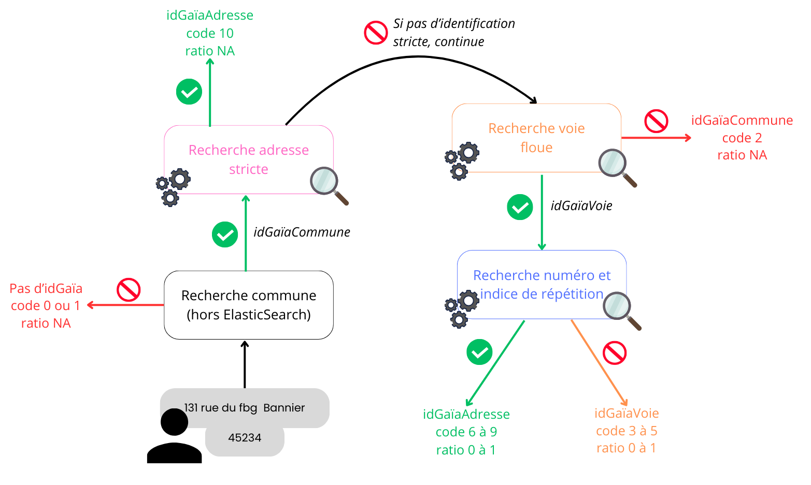

Identification d’adresse
L’objectif est de founir un service qui prend une adresse en entrée (couple string adresse/string code insee), et renvoie un identifiant Gaïa le plus précis possible et des informations sur la qualité de l’identification. Il y a 3 niveaux d’identifiants Gaïa :
- IdGaïaAdresse (le plus précis)
- IdGaïaVoie (lorsque le numéro n’est pas retrouvé, mais que la voie si)
- idGaïaCommune (lorsque ni l’adresse, ni la voie ne sont identifiées)
Exemple : {“adresseComplete”: “131 rue du faubourg bannier”, “depcom”: “45324”}.
Le depcom est le Code Officiel Géographique de la commune.

Fonctionnement de l’identification
Il existe deux indices : adresses contenant toutes les adresses fraçaises et voies contenant toutes les voies fraçaises.
Exemple : une adresse est “20 rue hoche” et une voie est “rue hoche”.
La première étape est la recherche stricte de l’adresse recherchée dans l’index adresses sur les adresses de la commune uniquement.
Si aucun IdGaïaAdresse ne ressort à l’issue de l’étape 1, alors :
- Recherche floue dans l’index voies sur les adresses de la commune uniquement, pour retrouver l’IdGaïaVoie (étape 2).
- Recherche dans l’index adresses sur les adresses de la voie trouvée à l’étape 1 uniquement, pour retrouver l’idGaïaAdresse (étape 3).
La qualité globale de l’appariement est appréciée au travers de deux indicateurs : un code retour qui donne, sur une échelle de 0 à 10, une vision globale sur le retour de l’algorithme et un score relatif pour repérer d’éventuelles concurrences entre réponses de qualité proche.
Premier niveau : un code retour de l’appariement
L’information principale est fournie par un code retour, qui vise à indiquer les éléments qui ont été identifiés dans le processus d’appariement.
L’algorithme recherche d’abord la commune indiquée (pour l’instant cette étape n’est pas faite avec ElasticSearch), puis la voie au sein de la commune et enfin l’adresse dans la voie, c’est-à-dire l’existence du numéro et de l’indice de répétition dans les adresses de la voie.
La voie retrouvée est typée selon quatre catégories, en fonction du nombre de trigrammes retrouvés :
- voie sûre : l’adresse contient plus de 65 % des trigrammes de la voie du référentiel
- voie peu douteuse : l’adresse contient entre 35 % et 65 % des trigrammes de la voie du référentiel
- voie douteuse : l’adresse contient entre 10 % et 35 % des trigrammes de la voie du référentiel
- voie non retrouvée : pas d’écho ou l’adresse contient moins de 10 % des trigrammes de la voie du référentiel
En ce qui concerne les adresses, les contrôles portent sur le numéro et l’indice de répétition :
- Si l’adresse demandée ne contient pas d’indice de répétition et que le numéro est trouvé, alors l’adresse est sûre.
- Si l’adresse demandée contient un indice de répétition et s’il est retrouvé, l’adresse est sûre.
- Si l’adresse demandée contient un indice de répétition mais qu’il n’est pas retrouvé, alors l’adresse est douteuse.
- Si le numéro n’est pas retrouvé exactement, aucune adresse n’est retournée.
Si une voie est douteuse, alors la qualité de l’adresse globale est douteuse : on ne distingue donc pas les cas où l’adresse est sûre et douteuse.
| Adresse | Voie | Code_retour | Libellé |
|---|---|---|---|
| sûre | sûre | 10 | Appariement direct sur l’adresse |
| sûre | sûre | 9 | Adresse sûre |
| douteuse | sûre | 8 | Adresse douteuse dans voie sûre |
| sûre & douteuse | douteuse | 7 | Adresse dans voie douteuse |
| sûre & douteuse | très douteuse | 6 | Adresse dans voie très douteuse |
| pas d’adresse trouvée | sûre | 5 | Voie sûre sans adresse |
| pas d’adresse trouvée | douteuse | 4 | Voie douteuse sans adresse |
| pas d’adresse trouvée | très douteuse | 3 | Voie très douteuse sans adresse |
| pas d’adresse trouvée | pas de voie trouvée | 2 | Commune seulement |
| pas d’adresse trouvée | pas de voie trouvée | 1 | Adresse à l’étranger |
| pas d’adresse trouvée | pas de voie trouvée | 0 | Problème dans les données (par exemple, commune non trouvée) |
Second niveau : un ratio de score relatif des deux premiers échos issus de la requête dans l’index voies
L’objectif de cette information complémentaire est d’indiquer la position de l’écho retourné par rapport aux autres échos possibles dans l’index voies, lors de la requête à l’étape 2. Il permet d’évaluer si le score Elastic du premier écho (noté R1) est bien supérieur au score du second (noté R2).
La formule du ratio est 1-(R2/R1) ; si le score est supérieur à 0,9999, il est ramené à 0,9999.
Si la valeur est proche de 1, alors le premier écho se détache nettement des autres et donc la recherche est sans ambiguïté. A l’inverse, si la valeur est proche de 0, alors le premier et le second écho ont le même score et la recherche aurait donc pu retourner un autre résultat.
Le score relatif est compris entre 0 et 1 et donné avec 4 décimales. Le score maximal est de 0,9999, afin de pouvoir être utilisé en combinaison avec le code retour.
Algorithme d’identification
La logique globale de l’algorithme est la suivante :
- On va enchaîner des étapes de contrôles, d’interrogation d’ElasticSearch, de règles de décision.
- A chaque étape, il est possible d’attribuer un code retour “sortant” à l’adresse qu’on souhaite identifier. Par exemple, si l’adresse est vide, on attribue un code retour 0 et l’adresse ne va pas plus loin dans l’algorithme.
- Si l’adresse n’a pas de code retour attribué, alors on continue dans l’algorithme.
Comme précisé plus haut, l’algorithme marche en 4 étapes d’identification: commune —> adresse exacte –si pas de match-> voie —> adresse
Prétraitements
Les données du client et dans l’index sont traitées de la même façon pour maximiser les matchs :
- Lowercase
- Asciifolding
- Traitement de la ponctuation
- Utilisation de listes de synonymes
0 - Identification de la commune
L’identification à la commune se fait à travers un dictionnaire, pour récupérer l’idGaïaCommune et passer à l’étape suivante.
1 - Identification adresse exacte
Afin d’accélerer notre procédure d’identification, une requête simple et rapide nous permet d’identifier une adresse si son orthographe est parfaite. Cette requête consiste à rechercher au sein des adresses de la commune identifiée à l’étape précédente grâce à un filter sur l’idGaïaCommune, les adresses dont la variable adresseComplete (string représentant l’adresse contenant le numéro, l’indice de répétition, le type et le nom de voie) correspond parfaitement au string envoyé par le client. Ceci est assuré par le caractère stricte de la requête must, accompagné d’un minimum_should_match=100%.
Pour gagner encore plus de temps, la variable adresseComplete ainsi que le string client ne sont pas découpés en token, comme dans les réglages par défaut d’ElasticSearch (le minimum should match est un seuil sur le nombre ou la proportion de bouts matchés entre le résultats de l’index et la demande du client, et un bout peut être le string complet, tout comme un token ou un ngram). Alors, le moteur va retourner l’adresse qui est parfaitement incluse dans le string envoyé.
En présence d’un résultat à cette requête, le premier echo est conservé avec un code retour 10 et l’algorithme d’identification se termine à cette étape.
2 - Identification voie
La requête pour identifier à la voie est plus complexe car elle inclut la possibilité d’avoir du flou dans l’adresse à rechercher.
Pour faciliter la recherche, un filtre est appliqué pour ne requêter que les voies dans la commune identifiée à l’étape 0.
C’est une succession de should où au moins l’un d’entre eux doit être validé pour que la voie soit renvoyée :
- Le nom de voie dans l’index non tokenisé est matché avec une fuzziness de 1 (boost : 200)
- Le type de voie et/ou le nom de voie du référentiel sont inclus dans l’adresse client avec une fuzziness de 1 (boosts respectifs : 5 et 15)
- Au moins un ngram du nom de voie de l’index, de taille 3 à 5, correspond (boost par ngram : 1)
Ensuite, une multitude de vérifications sont appliquées sur le premier echo (s’il existe), qui va déterminer si la voie est sûre, peu douteuse, douteuse ou non retrouvée (citées plus haut).
S’il n’y a pas de retour ElasticSearch ou si la voie est jugée comme non retrouvée d’après les règles, un code retour 2 sera affiché.
3 - Identification adresse
Pour retrouver l’adresse à partir de la voie, nous allons chercher dans les adresses de la voie identifiée à l’étape 2 (avec un filter sur idGaïaVoie) et demander à matcher sur les champs numéro et/ou indice de répétition dans notre base.
Des regex ont été développées pour extraire le numéro de l’adresse dans le string client et qui détecte la présence d’indice de répétition dans celle-ci. Ensuite, un must est appliqué sur le champ numéro avec l’extraction du numéro. Si l’extraction ne retourne rien, le numéro recherché par le must sera alors “0”. L’indice de répétition sera recherché avec un should.
Si le moteur retourne plusieurs adresses, l’adresse retournée sera :
- celle qui a un indice de répétition si un indice a été détecté dans l’adresse recherchée
- celle qui n’a pas d’indice de répétition si aucun indice n’a été détecté dans l’adresse recherchée
Dans le cas où un idGaïaAdresse est trouvé, il sera accompagné d’un code retour 7, 8 ou 9.
Finalement, dans le cas où aucune adresse ne ressort, alors un code retour 3, 4 ou 5 sera attribué en fonction de la fiabilité de la voie identifiée.